📮 Postal de Come en León
Ideal para guardar en el móvil o compartir. Incluye QR para abrir la guía.
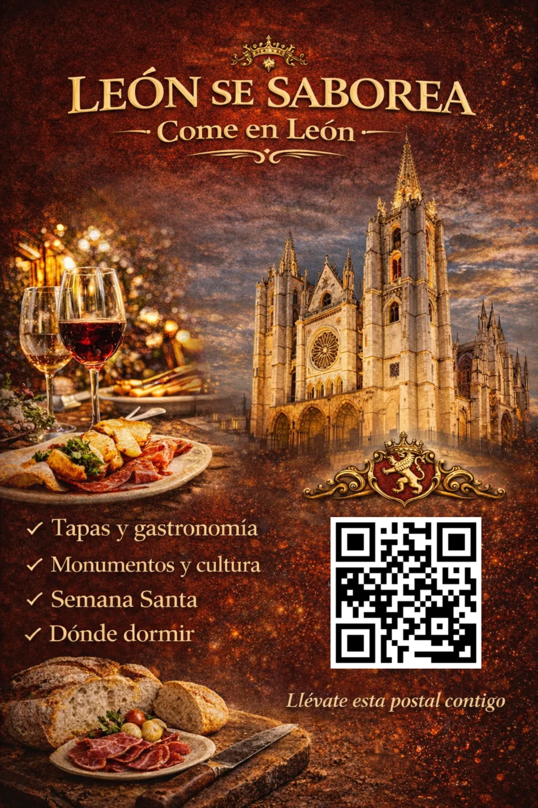
Tu guía local para comer, visitar y planificar León en 2026.
Monumentos, tapas, Semana Santa, agenda, excursiones y recursos para llevar en el móvil, sin perderte lo importante.
Dos recursos rápidos para abrir León desde el móvil antes de meterte en la guía: la postal con QR y el itinerario de Semana Santa 2026.
Ideal para guardar en el móvil o compartir. Incluye QR para abrir la guía.

Accede al itinerario completo con copyright de Come en León y guárdalo para llevarlo en el móvil.
Incluye:
Come en León es una guía local para descubrir qué ver y dónde comer en León en 2026. Aquí encontrarás itinerarios para visitar la Catedral de León, San Isidoro, la Casa Botines y el MUSAC, además de rutas fiables para ir de tapas por el Barrio Húmedo y el Barrio Romántico, restaurantes de cocina tradicional, hoteles céntricos y toda la información práctica sobre la Semana Santa de León 2026.
Última revisión editorial: marzo 2026.
León está muy bien conectada para una escapada de fin de semana o una visita de varios días. Antes de pensar en tapas, hoteles o monumentos, conviene saber cuál es la forma más cómoda de llegar según tu punto de origen.
Para muchos viajeros, es la opción más cómoda para llegar al centro de León sin preocuparse por aparcamiento. La estación de tren queda a distancia razonable del casco histórico y conecta bien con Madrid y otras ciudades del norte.
Consultar trenes →Una alternativa práctica y normalmente más económica. La estación de autobuses está junto a la de tren, así que resulta cómoda para llegar y seguir andando o en taxi hasta el alojamiento.
Ver rutas de autobús →El aeropuerto de León (LEN) está muy cerca de la ciudad. Puede ser útil si encuentras vuelo directo desde tu origen, aunque la oferta de rutas suele ser más limitada que en otros aeropuertos grandes.
Info del aeropuerto →Es buena opción si vas a combinar León capital con excursiones por la provincia. Si vienes al casco histórico, mira antes el aparcamiento: el centro tiene varias zonas peatonales y conviene entrar con parking claro para no dar vueltas de más.
Ver dónde aparcar →Consejo práctico: si tu plan es centrarte en Catedral, Barrio Húmedo, Barrio Romántico, San Isidoro y Casa Botines, lo más cómodo suele ser llegar sin coche o dejarlo aparcado al llegar y moverte luego a pie.
León se disfruta mejor caminando, pero llegar en coche sin plan puede complicarte la visita. El casco histórico, el Barrio Húmedo y parte del centro tienen tráfico limitado o calles poco cómodas para buscar sitio improvisando.
Si no te importa caminar un poco, suele compensar dejar el coche en zonas más tranquilas y entrar andando al centro. Las áreas próximas a Eras de Renueva o más alejadas del casco histórico suelen ser la primera opción a mirar, sobre todo en fines de semana y fechas con mucha afluencia.
Abrir Eras de Renueva →Si priorizas comodidad, los parkings del centro son la mejor baza para visitar Catedral, Barrio Húmedo, Barrio Romántico o Santo Domingo sin perder tiempo. Merece la pena especialmente si llegas con equipaje o en Semana Santa.
En el centro de León conviene revisar siempre la señalización en calle, la zona ORA y las restricciones vigentes antes de aparcar. Los horarios, tarifas o condiciones pueden cambiar, así que lo más prudente es confirmarlo allí mismo o en la información municipal oficial.
Consultar ORA →En días fuertes como Semana Santa, partidos, puentes o eventos grandes, lo más sensato suele ser dejar el coche fuera del núcleo más turístico y entrar andando.
Una selección rápida de monumentos y planes imprescindibles: gótico, románico, Gaudí, arte contemporáneo y paseos con mucho encanto.
Obra cumbre del gótico en España, famosa por sus impresionantes vidrieras y por ser la gran imagen de la ciudad. Si visitas León por primera vez, es la parada imprescindible.
Horarios y precios →Uno de los conjuntos románicos más valiosos de España. Su Panteón Real es conocido como la “Capilla Sixtina del románico” y merece la visita con calma.
Horarios y precios →Uno de los pocos edificios que Gaudí construyó fuera de Cataluña. Hoy alberga un museo y es una de las visitas culturales más recomendables del centro.
Horarios y precios →Uno de los edificios más emblemáticos de León. Su fachada plateresca, el entorno del río y el paseo hasta el centro lo convierten en una visita muy agradecida.
Cómo llegar →El gran plan cultural alternativo de León: arte contemporáneo, exposiciones temporales y una visita perfecta para combinar con San Marcos o un día de lluvia.
Horarios y precios →Planes claros para organizar la visita sin perder tiempo: León en 1 día, 2 días, 3 días y opciones de aire libre para combinar monumentos, tapas y descansos.
Lo dejo más limpio y directo: cuatro planes muy claros para organizar la visita sin perder lo importante y sin repetir demasiado la misma idea.
Plan exprés para una primera visita: Catedral, casco histórico, una ruta corta de tapas por el Barrio Húmedo y cierre con San Isidoro o Casa Botines antes de cenar en el centro.
Ideal para un fin de semana: primer día para centro histórico y tapeo; segundo día para Barrio Romántico, San Marcos, paseo junto al Bernesga y MUSAC si te apetece un plan cultural o hace mal tiempo.
La versión más completa: un día para monumentos, otro para barrios y tapeo, y un tercer día para salir de León capital y rematar con Astorga, Castrillo de los Polvazares y un buen cocido maragato.
Si quieres intercalar monumentos con ratos de paseo o bajar revoluciones después de comer, hay tres apoyos muy cómodos: Parque de Quevedo, Paseo del Bernesga y La Candamia si vienes en coche y hace buen tiempo.
Para Semana Santa, mejor consultar la sección específica y el itinerario completo de procesiones, porque esos días la ciudad cambia bastante el ritmo.
Desde la ruta clásica por el Barrio Húmedo hasta cocina tradicional, street food, hamburguesas destacadas y restaurantes Michelin para comer muy bien en León.
Si te preguntas dónde comer y tapear en León, el Barrio Húmedo y el Barrio Romántico son parada obligatoria. En León la tapa acompaña habitualmente a la consumición, ya sea un corto de cerveza o un vino Prieto Picudo. En esta guía tienes rutas fiables para probar desde la morcilla hasta croquetas, cocina tradicional y restaurantes para una cena más especial.
La ruta sagrada. Sitios con tapa potente y ambiente a tope.
Ver ruta →Alternativa más tranquila al Húmedo: tapeo más relajado junto a San Isidoro, Calle del Cid y Plaza del Cid.
Ver guía →El cocido que se come al revés. Dónde probarlo bien.
Ver lista →Plan informal para una comida o cena distinta en León, sin quitar protagonismo al Barrio Húmedo, al Barrio Romántico o al cocido maragato.
Pablo y Cocinandos. Para celebraciones de verdad.
Ver selección →Kamín, Marcela, niMÚ… los sitios de moda.
Ver modernos →Procesiones, cofradías, cartel oficial y claves prácticas para vivir una de las celebraciones más importantes de la ciudad.
Interés Turístico Internacional. Historia, cofradías y lo imprescindible.
¿Cuándo es la Semana Santa en León 2026? Se celebra del 29 de marzo (Domingo de Ramos) al 5 de abril (Domingo de Resurrección). Es uno de los momentos más importantes del año en la ciudad y mezcla procesiones históricas, tradiciones únicas como La Ronda y el ambiente de limonada leonesa en el Barrio Húmedo.
Actualizado con la guía oficial 2026: incluye cambios de horarios y recorridos, y novedades como el traslado extraordinario del Dainos, la procesión infantil y el pregón a caballo.
Guía rápida, tradiciones clave y contexto para entender la Semana Santa de León.
Ver detalle →Listado completo de hermandades penitenciales.
Ver listado →Horarios, recorridos, novedades oficiales y acceso directo al itinerario completo actualizado.
Abrir itinerario →Concursos, conciertos, teatro, ferias y mercadillos para completar tu visita con planes culturales y gastronómicos.
Qué es, cómo funciona y cómo aprovecharlo para una ruta por el Húmedo y el Romántico.
Ver guía →Música en directo (ejemplos). Actualiza cuando quieras.
Ver tabla →Obras, circo, cine y espectáculos de sala para el trimestre.
Ver cartelera →Botillo, agroalimentaria, etc.
Ver tabla →Qué hay cada día por la provincia.
Ver tabla →La portada mantiene un resumen rápido, pero la URL fuerte para conciertos, ferias, mercadillos y teatro pasa a ser /agenda-leon/.
León capital funciona muy bien como campo base para una escapada de varios días. Desde aquí puedes montar planes de patrimonio, montaña, pueblos con encanto y gastronomía sin perder demasiado tiempo en carretera.
La excursión más agradecida para casi todo el mundo: Astorga para ver catedral, Palacio Episcopal y ambiente monumental, y Castrillo de los Polvazares para rematar con calles de piedra, calma y un buen cocido maragato.
Si te apetece una salida más potente, Las Médulas son uno de los grandes paisajes de la provincia. Puedes completar el día con una parada en el mirador de Orellán, el Castillo de Ponferrada o el puente de Molinaseca antes de volver a León.
Cuando apetece salir del plan urbano, el norte cambia el viaje por completo. Riaño, las Cuevas de Valporquero y la vertiente leonesa de Picos de Europa son muy buena idea si buscas paisaje abierto, carretera bonita y aire puro.
Si tu escapada es de 2 días, prioriza Astorga y Castrillo. Si es de 3 o 4 días, ya compensa añadir Bierzo o montaña.
León tiene ambiente todo el año, pero hay momentos en los que la ciudad cambia por completo. Si puedes elegir fecha, estas celebraciones te ayudan a decidir cuándo venir.
Es una de las citas clave de la ciudad: procesiones, tradiciones locales, ambiente cofrade y mucha vida en el centro. Perfecta si buscas historia, identidad local y un viaje con mucho ambiente en calle.
Ver Semana Santa →Las grandes fiestas de verano: conciertos, casetas, recinto ferial, fuegos y ambiente muy animado. Muy buena fecha si prefieres León con días largos y plan más festivo que religioso.
Una época fantástica para ver tradición leonesa de verdad: pendones, carros engalanados, gastronomía y un ambiente muy nuestro. Si buscas una visita con sabor local, es una fecha muy buena.
En León la fiesta suele arrancar antes que en muchas ciudades. Entre el café torero, el tardeo y las copas del centro, puedes enlazar terraza, cena y pubs sin depender demasiado del coche.
Lo más agradecido es empezar por el Barrio Romántico, Calle Ancha o Plaza Mayor y dejar que la tarde vaya enlazando vermús, copas y cena. Es el plan más cómodo si quieres ambiente sin complicarte.
Ver Barrio Romántico →Cuando cae la noche, el Barrio Húmedo sigue siendo la referencia. Lo bueno de León es que puedes ir saltando de local en local a pie, entre música comercial, pop español, remember y ambiente universitario.
Ver Barrio Húmedo →León funciona muy bien para grupos porque casi todo queda cerca, se come bien y hay bastante ambiente en fines de semana. Si priorizas dormir tranquilo, conviene mirar bien la zona del alojamiento antes de reservar.
Elegir zona para dormir →León tiene una luz muy agradecida cuando cae la tarde. No hace falta perseguir veinte sitios distintos: con unos pocos puntos bien elegidos puedes llevarte la foto clásica, una vista abierta y un rincón con mucho encanto.
Si te apetece una vista más abierta, el entorno de La Candamia y las subidas hacia Las Lomas te regalan una panorámica tranquila de León y un atardecer menos urbano que el del centro.
Plaza de Regla sigue siendo la gran postal de León. Si el suelo refleja después de lluvia o limpieza, la fachada gótica y las vidrieras exteriores dejan una de las fotos más reconocibles de la ciudad.
Es uno de los rincones con más encanto de León: empedrado, cruz de piedra, iglesia y una luz dorada que funciona muy bien en foto. Si buscas una estampa más bohemia y menos monumental, aquí la tienes.
Para rematar, combina la foto clásica de San Marcos y las letras de LEÓN con la fachada multicolor del MUSAC. Es la mejor forma de llevarte en el mismo paseo la cara más histórica y la más moderna de la ciudad.
Si solo tienes una tarde, la combinación más agradecida suele ser Catedral + Plaza del Grano + San Isidoro + Barrio Húmedo al anochecer.
Hoteles céntricos y alojamientos bien valorados para moverte andando por el casco histórico, el Barrio Húmedo y los principales monumentos.
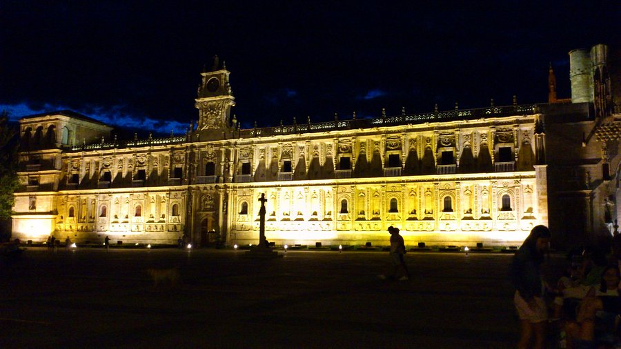
Dormir en un edificio histórico de León. Es una de las opciones más especiales de la ciudad y queda muy bien situado para combinar casco histórico, tapeo y paseo por San Marcos.
Ver precios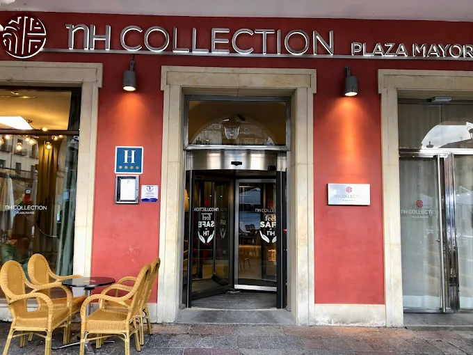
Ubicación excelente en la Plaza Mayor de León. Ideal si quieres salir de tapas por el Barrio Húmedo y tener la Catedral y el casco histórico a pocos minutos andando.
Ver precios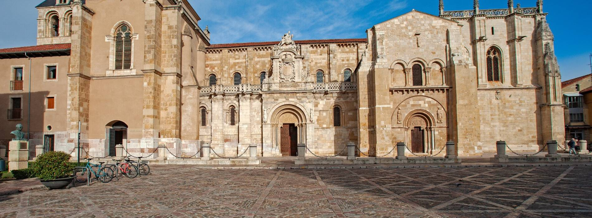
Junto a San Isidoro y muy cerca del Barrio Romántico. Una opción muy cómoda para dormir en el centro y visitar monumentos, bares y plazas sin coger coche.
Ver preciosTransparencia: los enlaces a Booking, Airbnb u otras plataformas llevan a sitios de terceros. Si en el futuro Come en León activa programas de afiliación, se indicará de forma clara en el aviso de afiliación.
Respuestas rápidas para organizar mejor tu visita: tapas, monumentos, aparcamiento, tiempo recomendado, lluvia, alojamientos y escapadas desde León.
Suele celebrarse durante marzo. Te hemos preparado una mini guía con ruta recomendada por el Barrio Romántico y el Barrio Húmedo para aprovecharlo sin colas.
Es una zona céntrica junto a San Isidoro, la calle del Cid y la Plaza del Cid. Se suele considerar una alternativa más tranquila al Barrio Húmedo y está muy cerca de la Catedral por Calle Ancha.
Lo más típico es ir a Astorga o a Castrillo de los Polvazares. En la sección de cocina tradicional tienes una selección con mapas y un consejo clave: reserva siempre, sobre todo de jueves a domingo.
Para una primera ruta fiable, empieza por el Barrio Húmedo y combina 4–6 paradas. En esta guía tienes una selección corta de bares con tapa potente y ambiente.
Si vas justo de tiempo: Catedral, San Isidoro (Panteón Real) y la Casa Botines. Si te apetece plan alternativo, añade MUSAC.
Además de las procesiones, hay tradiciones muy locales (como Genarín) y un tejido cofrade enorme: aquí tienes guía rápida y listado completo de cofradías.
Lo más cómodo es alojarse en el centro (Plaza Mayor / casco histórico) o cerca de San Marcos si te encaja. Tienes 3 opciones destacadas y enlaces directos para comparar.
Desde Madrid: tren de alta velocidad (tiempo aproximado ~2 h según servicio) o coche por la A-6 (~3 h). Desde Barcelona: normalmente en tren con conexión en Madrid (tiempo total aprox. ~5 h). Para venir sin preocuparte por aparcar, el tren suele ser la opción más cómoda.
El casco histórico y el Barrio Húmedo tienen varias zonas peatonales o de acceso restringido. Para una visita cómoda suelen funcionar mejor los parkings céntricos o dejar el coche algo más lejos y entrar andando. Tienes un resumen práctico en la sección Dónde aparcar en León.
Buen plan con lluvia: MUSAC, Museo Catedralicio, Panteón Real de San Isidoro y Casa Botines. Y luego, tapas por el centro.
En general, León suele ser una ciudad asequible para viajar. En muchos bares la tapa va incluida con la consumición y puedes encontrar menús de mediodía en torno a 12–15 € (orientativo). Dormir en el centro suele empezar alrededor de 60 € por noche (según fecha).
Con 1 día puedes ver Catedral, San Isidoro y hacer ruta de tapas. Con 2 días añades San Marcos, MUSAC y Barrio Romántico. Para una visita tranquila, lo ideal son 3 días.
El cocido maragato es típico de la Maragatería, a unos 50 km. Lo más habitual es comerlo en Castrillo de los Polvazares o Astorga, una excursión perfecta desde León.
Si solo puedes hacer una, la más redonda suele ser Astorga + Castrillo de los Polvazares: patrimonio, paseo bonito y cocido maragato en el mismo día.
Si buscas ambiente y calle, San Juan y San Pedro es una fecha muy buena. Si prefieres tradición local, San Froilán también merece mucho la pena.
Si quieres aparecer en la guía, escríbenos con tu propuesta y la revisaremos con la mayor brevedad posible.
📩 ContactarEn León, la tapa suele ir con la consumición. Aquí tienes una ruta corta y fiable.
Abre la zona o la ruta a pie con los locales principales de esta guía.
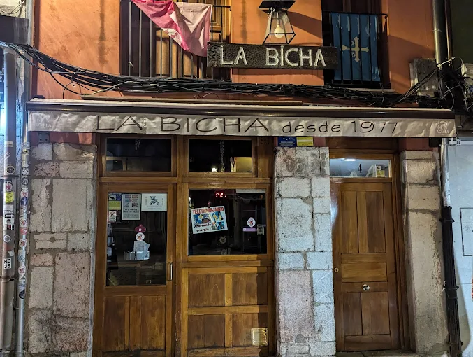
Una parada obligatoria del Barrio Húmedo de León. Este local mítico es famoso por su tapa de morcilla y por el ambiente de barra clásico del casco antiguo.
📍 Mapa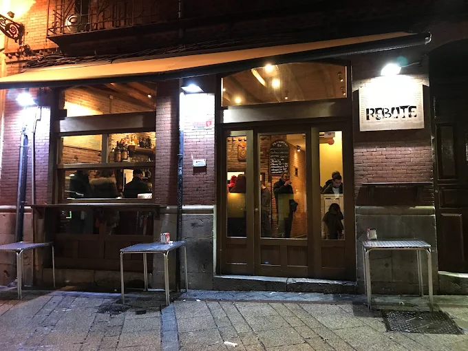
En plena Plaza San Martín, destaca por sus croquetas caseras y por el ambientazo que suele tener a mediodía y por la noche. Una de las paradas más fiables de la ruta.
📍 Mapa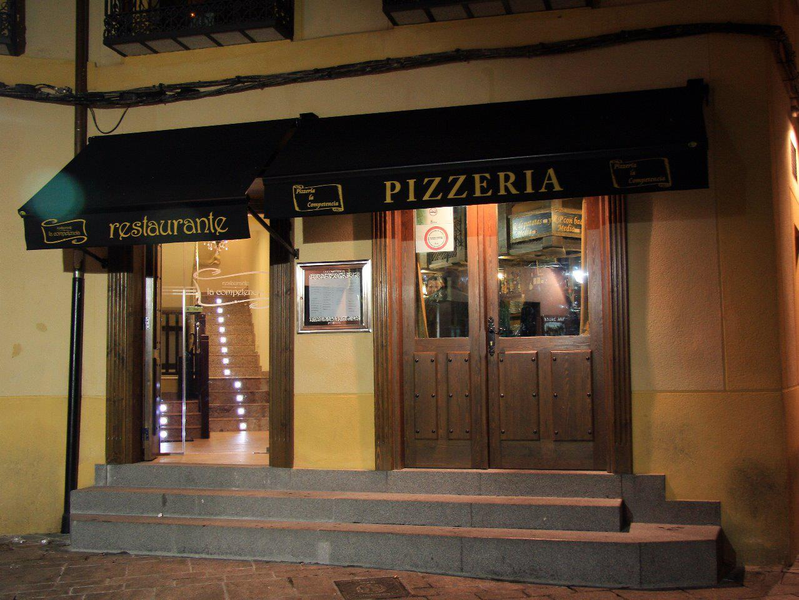
Clásico del Húmedo para salir de la tapa más tradicional: con la consumición suele llegar una porción de su famosa pizza artesanal. Muy buena opción para grupos y rutas largas.
📍 Mapa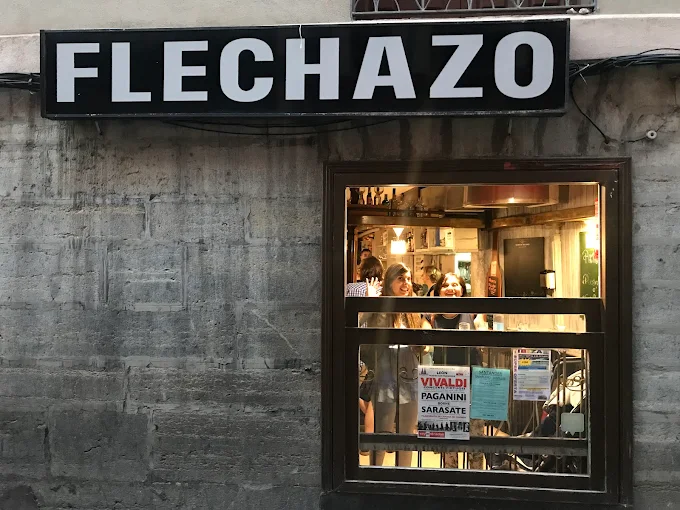
Un clásico para pedir algo sencillo y efectivo: sus patatas de tapa son de esas paradas que nunca fallan cuando haces ruta por el centro.
📍 Mapa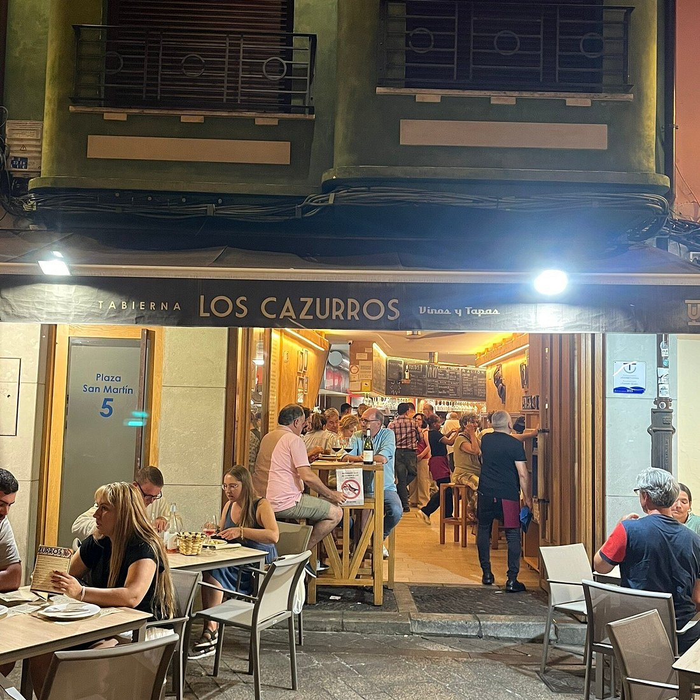
Muy conocido por sus patatas con cabrales y otras tapas clásicas. Buena parada para alternar una tapa contundente con el resto de bares del Húmedo.
📍 Mapa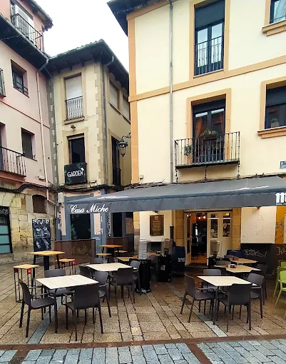
Taberna muy reconocible del Húmedo, ideal para tapear guisos caseros, callos, mollejas o picadillo en una ruta con sabor leonés.
📍 Mapa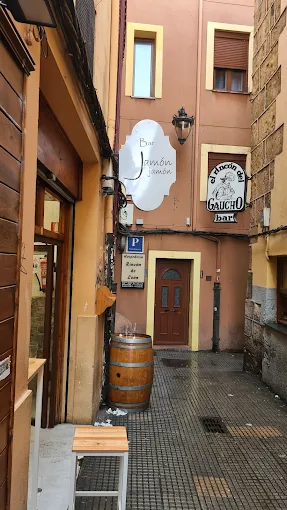
Especialistas en ibéricos, quesos y tapas de embutido. Muy buena parada para tomar vino y sumar una tapa con producto leonés de corte más clásico.
📍 Mapa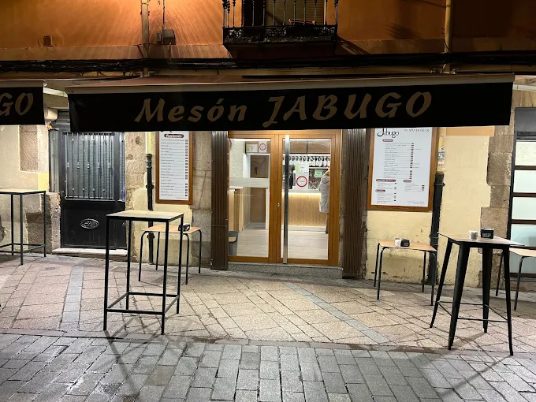
Local emblemático del Húmedo conocido por sus tapas de sopa de ajo o patatas alioli. Muy buena relación calidad-precio y ambiente de bar de toda la vida.
📍 Mapa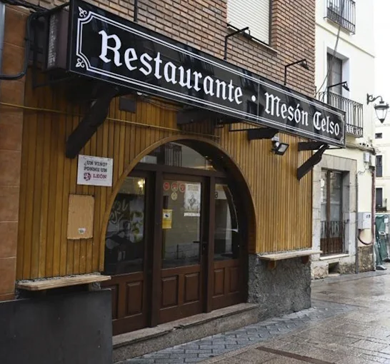
Ofrece tapas muy recordadas como sus sopas de ajo o las patatas con picadillo. Local acogedor y muy bien situado para seguir la ruta sin salir del casco histórico.
📍 Mapa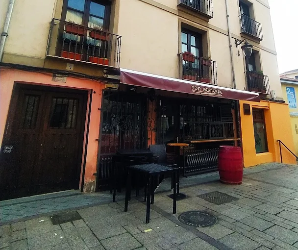
El templo del embutido leonés en plena zona de tapeo. Aquí la tapa suele girar alrededor de cecinas, chorizos y otros curados de la tierra.
📍 MapaZona céntrica vinculada a San Isidoro, la calle del Cid y la Plaza del Cid. Se considera la alternativa más tranquila al Húmedo, ideal para disfrutar de tapas más elaboradas, una ruta pausada y un ambiente muy cómodo a pocos minutos de la Catedral.
Abre la zona o la ruta a pie con los locales principales de esta guía.

Un local con muchísimo encanto, decorado con aire de anticuario rural. Su tapa estrella es el picadillo de chorizo con patatas fritas, una parada muy reconocible para arrancar con fuerza la ruta por el Romántico.
📍 Mapa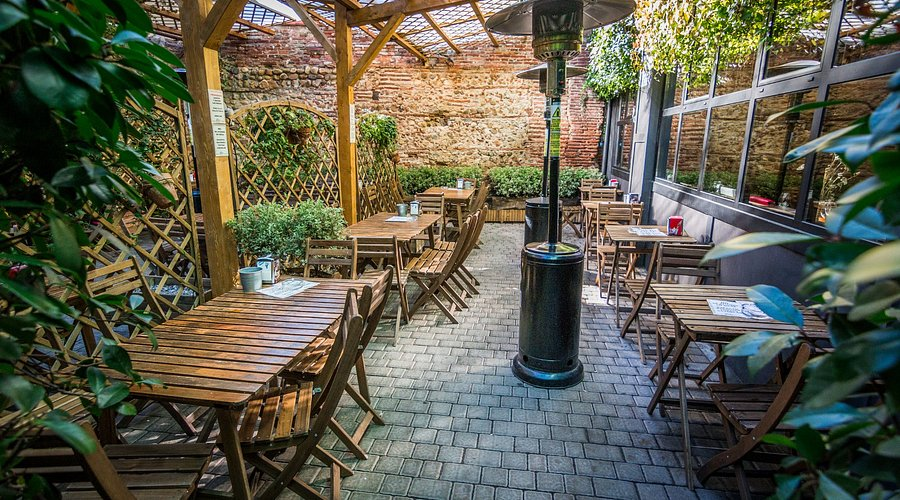
Local amplio con un patio interior muy agradable. Suele funcionar muy bien para una parada tranquila, con tapas generosas como mejillones en salsa, tigres o morcilla, perfectas para alternar con el resto de bares de la zona.
📍 Mapa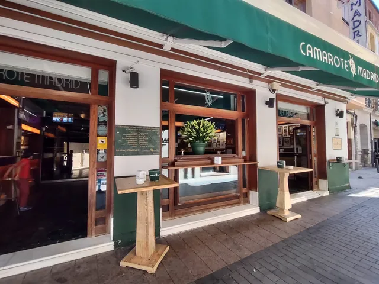
Pura solera leonesa y uno de los locales más bonitos del centro. Es muy famoso por su sopa de ajo, la paella o su salmorejo, con servicio rápido en barra incluso cuando está concurrido.
📍 Mapa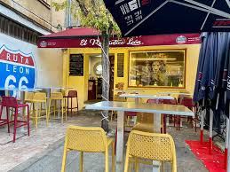
Bar muy conocido en la zona para hacer una parada corta y efectiva. En la barra suelen funcionar muy bien propuestas como el burrito de jamón y queso caliente o la cecina con membrillo.
📍 Mapa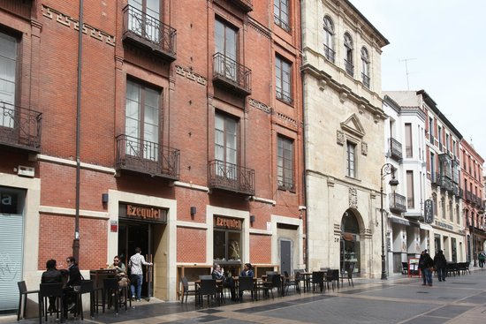
Conexión perfecta entre la Catedral y el Romántico. Si te apetece embutido leonés, aquí es fácil acertar con chorizo, salchichón y cecina en una parada muy cómoda de la ruta.
📍 Mapa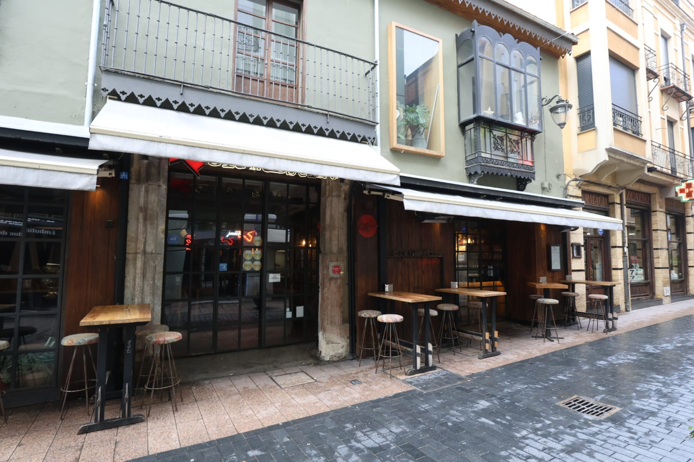
Aporta el punto moderno al barrio. Suele sorprender con bocados creativos, mini hamburguesas o cremas de temporada, muy buena opción si quieres un tapeo algo más actual.
📍 MapaSe come al revés: primero las carnes, luego los garbanzos con repollo y por último la sopa. Reserva siempre, sobre todo en fin de semana.
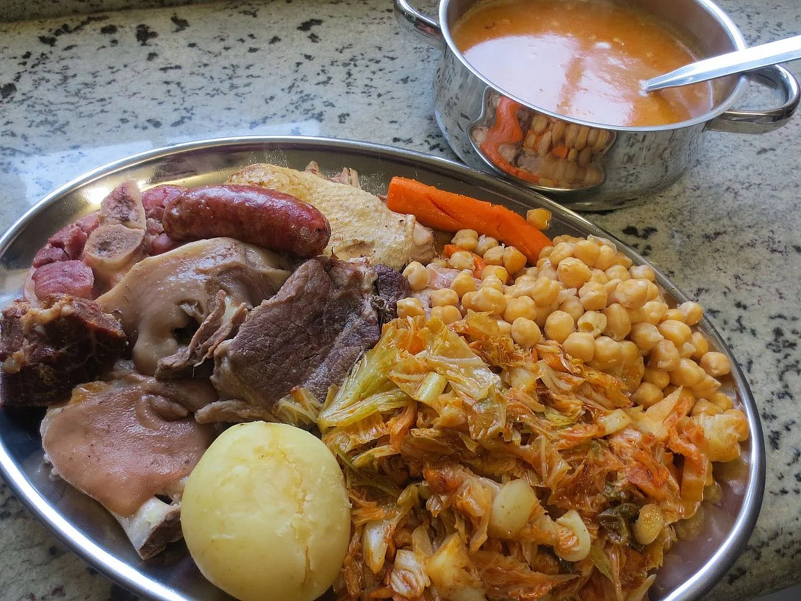
El referente. Dos locales en Astorga. Cocido completo con 10 carnes + postre por ~23 €. Reserva obligatoria.
📍 MapaJunto a la Catedral y el Palacio de Gaudí. Nº 1 en Tripadvisor Astorga. Cocido todo el año, elaboración artesanal.
📍 MapaClásico con más de 100 años de historia. Cocido maragato de toda la vida en el centro de Astorga.
📍 MapaEn el pueblo más emblemático del cocido. Excelente relación calidad-precio. Ambiente rural auténtico.
📍 MapaEspecializado en cocido maragato y cocina de la Maragatería. Muy bien valorado por los propios leoneses.
📍 MapaMenú completo ~32 € (incluye pan, ensalada, postre, café y hojaldres de Astorga). Con reserva previa.
📍 MapaEl cocido maragato es un plato de mediodía. Reserva siempre, especialmente de jueves a domingo. Si vas en grupo grande, avisa con antelación. Castrillo de los Polvazares + cocido = excursión perfecta desde León (a 50 km).
Rey del invierno. Embutido curado en caliente típico del Bierzo, con IGP protegida. Mejor con cachelos (patatas cocidas).
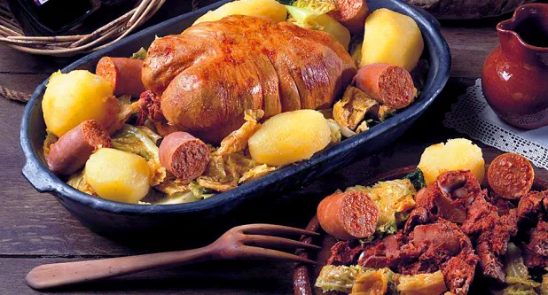
El nombre lo dice todo. Botillo todo el año, embutidos bercianos y carnes a la piedra. Precio medio 15–20 €.
📍 MapaCocina berciana tradicional y trato cercano. Botillo todo el año con cachelos. Ideal si pasas por el Bierzo.
📍 MapaIGP protegida. La versión leonesa del jamón curado. Perfecta como entrante con AOVE y escamas de sal, o acompañando cualquier menú.
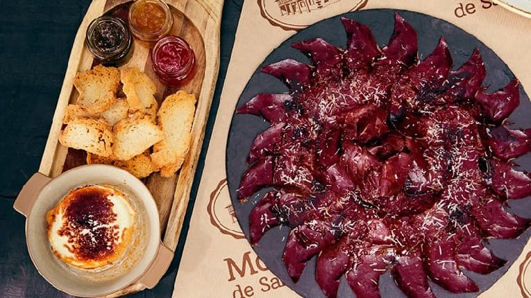
La encuentras en casi cualquier bar o restaurante del centro. Para llevarte a casa: mercados del centro y tiendas de productos leoneses.
Buscar tiendaCocina creativa, producto local y ambiente contemporáneo.
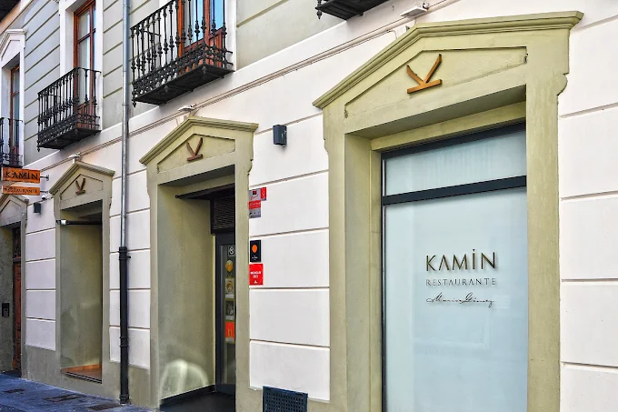
Cocina de mercado con enfoque creativo. Precio medio orientativo 35–45 €.
Mapa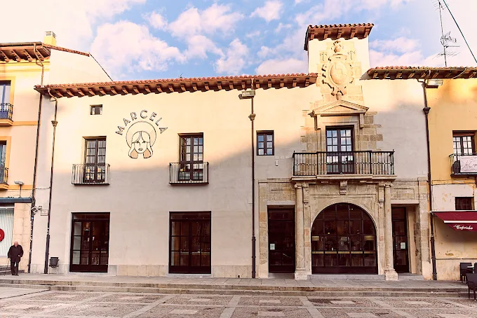
Fusión mediterránea moderna. Ideal para grupos y cenas informales.
Mapa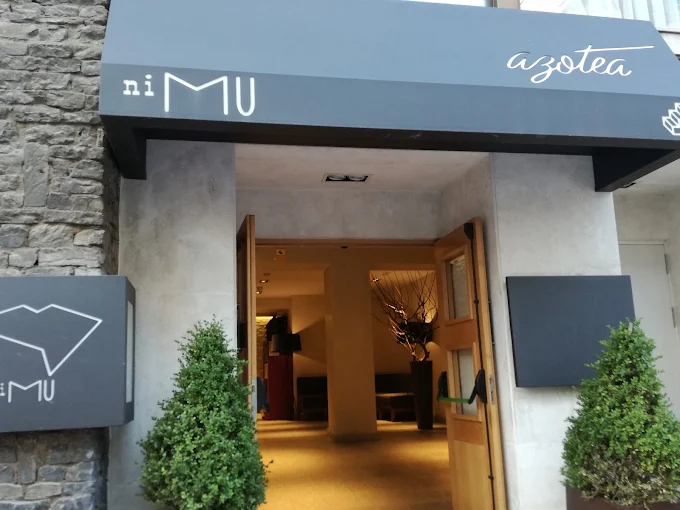
Terraza con vistas al casco histórico y cocina moderna desenfadada.
Mapa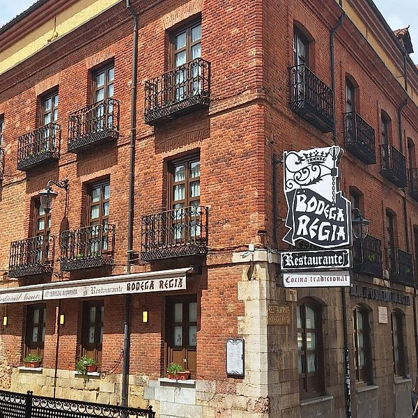
Cocina tradicional leonesa con toques actuales, en el entorno del Barrio Romántico. Precio medio orientativo 30–40 €.
MapaDurante marzo, bares de toda la ciudad suelen participar con una tapa “especial” dentro del concurso La Mejor Tapa de León. Es el mejor momento para probar novedades y montar una ruta por zonas: Barrio Húmedo (ambiente más animado) y Barrio Romántico (alternativa más tranquila junto a San Isidoro).
Mantén la filosofía de la web: ruta corta y fiable. La clave es no intentar “verlo todo”.
| Momento | Plan | Zona |
|---|---|---|
| Mediodía | Empieza con 2–3 tapas de concurso + bebida | Romántico (San Isidoro / Plaza del Cid) |
| Tarde | Paseo por el centro (Catedral / Calle Ancha) o descanso | Centro histórico |
| Noche | Remata con 2–3 paradas más (ambiente) | Húmedo (Plaza Mayor y calles cercanas) |
| Fecha | Evento | Lugar | |
|---|---|---|---|
| 19–21 Feb | Feria de Febrero (Maquinaria Agrícola) | Valencia de Don Juan | Consultar |
| 27 Feb–1 Mar | Feria del Stock de Invierno | Valencia de Don Juan | Consultar |
| 7–8 Mar | Feria de Gallos de Pluma y Mosca Artificial | La Vecilla | Consultar |
| 7–8 Mar | Feria de Perros de Caza | Camponaraya | Consultar |
| 21–22 Mar | REINATUR (Caza, Pesca y Naturaleza) | Boca de Huérgano | Consultar |
| 21–22 Mar | Feria de Stocks del Comercio | La Bañeza | Consultar |
| Mar (todo el mes) | Concurso La Mejor Tapa de León | Bares de León | Consultar |
Tip: cuando tengas fechas oficiales, actualiza esta tabla y listo.
Selección rápida de conciertos destacados en León para marzo de 2026. Si un evento aún no tiene enlace oficial, lo dejamos marcado como “Consultar” para evitar información confusa.
| Fecha | Artista / Evento | Lugar | Hora | Entradas |
|---|---|---|---|---|
| 6 Mar | Arco (Gira 10º Aniversario) | Espacio Vías | 20:30 h | Comprar → |
| 12 Mar | Tenda | El Gran Café | 21:00 h aprox. | Consultar sala |
| 13 Mar | Gilipojazz | Espacio Vías | 21:00 h aprox. | Próximamente |
| 19 Mar | Rubén Pozo | El Gran Café | 21:00 h aprox. | Consultar sala |
| 20 Mar | Los Invaders | El Gran Café | 21:00 h aprox. | Consultar sala |
| 21 Mar | 🤘 León Primavera Rock Fest — Sôber, Saurom, Dry River… | Plaza de Toros | 17:00 h | Desde 22€ → |
| 21 Mar | Rufus T. Firefly | Espacio Vías | 21:00 h aprox. | Próximamente |
| 26 Mar | Süne | El Gran Café | 21:00 h aprox. | Consultar sala |
| Día | Lugares | |
|---|---|---|
| Lunes | Boñar, Valderas, Villamañán | Consultar |
| Martes | Astorga, Bembibre, Laguna de Negrillos | Consultar |
| Miércoles | León (Plaza Mayor), Sahagún, Valencia de Don Juan | Consultar |
| Jueves | Benavides, Cistierna, Santa María del Páramo | Consultar |
| Viernes | León (Papalaguinda), Mansilla de las Mulas | Consultar |
| Sábado | León (Plaza Mayor), La Bañeza, Ponferrada | Consultar |
| Domingo | El Rastro (León), Santa María del Páramo | Consultar |
| Fecha | Espectáculo | Lugar | Precio | |
|---|---|---|---|---|
| 20 Feb | 'La desconquista' (teatro musical) | Teatro Bergidum, Ponferrada | 15 € | Consultar |
| 21 Feb | 'La doncella guerrera' | Teatro San Francisco | 7 € | Consultar |
| 21 Feb | 'El espejo y sus reflejos' | Teatro El Albéitar (ULE) | 10 € | Consultar |
| 22 Feb | 'La maestra' (teatro títeres familiar) | Auditorio Ciudad León | 6 € | Consultar |
| 22 Feb | 'Incipit' — Circo (taquilla inversa) | Fac. Filosofía y Letras | Libre | Consultar |
| 24 Feb | 'El cielo de Berlín' (Wim Wenders) | Teatro San Francisco | 4 € | Consultar |
| 25 Feb | 'Mar, o cómo sobrevivir a un tsunami' | Auditorio Ciudad León | 6 € | Consultar |
| 26 Feb | 'La Barraca' | Auditorio de León | 22 / 15,40 € | Consultar |
Especial: el León Primavera Rock Fest (21 Mar) es la primera edición en la Plaza de Toros con Sôber, Saurom y Dry River, entre otros. En marzo también se celebra el Concurso La Mejor Tapa de León por bares de toda la ciudad: perfecto para combinar con la sección Comer.
Entre el Viernes de Dolores y el Domingo de Resurrección, León vive días intensos de tradición cofrade, patrimonio artístico e imaginería, y mucho ambiente en la calle.
Fuente institucional: Junta Mayor de Cofradías y Hermandades de León (folleto y contenidos oficiales).
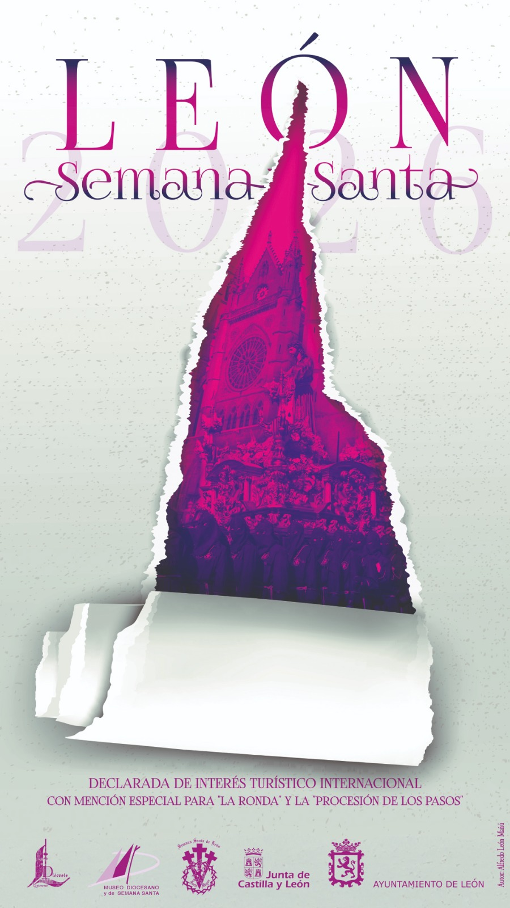
Nota: añade créditos del cartel (autor/a y año) cuando lo confirmes desde la fuente oficial.
En León, la limonada leonesa es una bebida tradicional de Semana Santa elaborada a base de vino, cítricos y azúcar. Es parte del ambiente del Barrio Húmedo y del Barrio Romántico, y suele acompañar el tapeo y las reuniones entre amigos durante esos días.
En algunos contextos escucharás expresiones populares muy locales para referirse a salir a tomar limonada. En la guía la tratamos siempre como lo que es hoy: una tradición gastronómica leonesa ligada al ambiente de Semana Santa.
En la noche del Jueves Santo, León vive una de sus tradiciones más singulares: El Entierro de Genarín, una celebración popular y laica en memoria de Genaro Blanco, personaje mítico de la ciudad fallecido en 1929.
Si vienes en Semana Santa, es uno de esos actos que ayudan a entender la personalidad popular de León más allá de las procesiones estrictamente religiosas.
La Semana Santa de León hunde sus raíces en el siglo XVI y hoy reúne 16 cofradías, más de 30 actos procesionales y cerca de un centenar de pasos en la calle. (Resumen adaptado del folleto institucional.)
Dentro de las procesiones de Semana Santa de León hay dos que destacan: La Ronda y la Procesión de los Pasos, con mención especial en la Declaración de Interés Turístico Internacional.
Ambiente nocturno y tradición en el casco histórico. Ideal para vivir la ciudad “a pie” y con tiempo.
Una de las más emblemáticas: pasos, papones y un recorrido que concentra lo esencial de la Semana Santa leonesa.
Nota: cuando salgan horarios oficiales 2026, añadimos fecha y hora aquí para dejarlo definitivo.
Aquí tienes el itinerario ampliado para consultar recorridos, procesiones y llevarlo en el móvil o descargarlo.
Llega con tiempo al centro (Tráfico + gente). Si vienes con peques, mejor ver una procesión “tranquila” y luego tapeo.
La Semana Santa de León 2026 es uno de los momentos más importantes del año en la ciudad. Aquí tienes un acceso rápido a lo esencial: guía práctica, procesiones, cofradías y recursos oficiales para organizar la visita.
Si vienes solo un día, combina una procesión destacada con paseo por el Barrio Húmedo o por el Barrio Romántico.
Selección y estructura propia (sin copiar textos extensos). Si quieres contrastar detalles, dejamos la fuente opcional en cada ficha.
Historia y sede: Fundada en 1578, es una de las cofradías más antiguas y queridas de León. Tiene su sede en la Capilla de Santa Nonia y es una referencia imprescindible del centro histórico y de la Procesión del Santo Entierro.
Cómo reconocerla: destaca por su túnica negra, caperuza negra y la sobriedad de su hábito penitencial.
Fuente (opcional): semanasantadeleon.com
Historia y sede: Nacida en 1611, es el gran corazón popular del Viernes Santo leonés. Desde la Capilla de Santa Nonia organiza actos tan conocidos como La Ronda y la multitudinaria Procesión de los Pasos.
Cómo reconocerla: viste túnica y capillo negros, con un hábito muy reconocible en las madrugadas y desfiles más emblemáticos de la ciudad.
Fuente (opcional): semanasantadeleon.com
Historia y sede: Sus orígenes están documentados desde 1513, lo que la convierte en una de las hermandades históricas de León. Está ligada al entorno del Convento de San Francisco y a algunos de los actos más solemnes del calendario penitencial.
Cómo reconocerla: su hábito combina túnica negra con detalles morados, un aspecto clásico de la Semana Santa leonesa.
Fuente (opcional): semanasantadeleon.com
Historia: La Hermandad de Santa Marta fue constituida el 11 de diciembre de 1945 por decreto del obispo de León, aunque su gestación arranca en 1941 en el Sindicato de Hostelería y Similares. Desde 1950 organiza la Procesión de la Sagrada Cena (Jueves Santo) y con el tiempo incorporó nuevos pasos.
Dato práctico: Desde el 5 de marzo de 1995 pasa a denominarse Hermandad de Santa Marta y de la Sagrada Cena, y cuenta con la sección de “Las Samaritanas” (1982).
Fuente (opcional): semanasantadeleon.com
Resumen propio: lo esencial para orientarte rápido (historia, sede y cómo reconocer el hábito).
Fuente (opcional): semanasantadeleon.com
Historia y sede: La Cofradía de las Siete Palabras de Jesús en la Cruz fue fundada el 22 de septiembre de 1962 y tiene su sede en la iglesia de San Marcelo. Desfiló por primera vez en 1963 (procesión del Pregón) y ese mismo Viernes Santo organizó su primera procesión propia.
Rasgo distintivo: En sus estatutos se contempla la promesa del silencio, siendo la primera penitencial de León en hacerlo según reseñas históricas de la cofradía.
Fuente (opcional): semanasantadeleon.com
Resumen propio: lo esencial para orientarte rápido (historia, sede y cómo reconocer el hábito).
Fuente (opcional): semanasantadeleon.com
Resumen propio: lo esencial para orientarte rápido (historia, sede y cómo reconocer el hábito).
Fuente (opcional): semanasantadeleon.com
Historia y sede: La Cofradía del Santísimo Cristo de la Expiración y del Silencio fue fundada en 1991 y tiene su sede en el Convento de San Francisco. Nació para sostener y dar forma a cortejos vinculados a la tradición franciscana en León, destacando por su austeridad y seriedad.
Actos destacados: Organiza la Procesión del Silencio (Miércoles Santo) y participa en la Procesión del Dainos (Domingo de Ramos), además de un Vía Crucis cantado el Martes Santo.
Fuente (opcional): semanasantadeleon.com
Historia y sede: La Cofradía de María del Dulce Nombre se impulsó en 1991 (comisión gestora en enero y aprobación de estatutos en mayo) en el entorno del Convento de las Madres Benedictinas Carbajalas. Nació con una idea muy clara: favorecer una participación más activa de la mujer en la Semana Santa leonesa.
Tradición propia: Desde 1995 celebran el aniversario de la Aparición de la Virgen del Camino con una Procesión-Romería desde la Basílica al Humilladero, portando a hombros a la titular.
Fuente (opcional): semanasantadeleon.com
Historia y sede: Sus orígenes están documentados desde 1513, lo que la convierte en una de las hermandades históricas de León. Está ligada al entorno del Convento de San Francisco y a algunos de los actos más solemnes del calendario penitencial.
Cómo reconocerla: su hábito combina túnica negra con detalles morados, un aspecto clásico de la Semana Santa leonesa.
Fuente (opcional): semanasantadeleon.com
Resumen propio: lo esencial para orientarte rápido (historia, sede y cómo reconocer el hábito).
Fuente (opcional): semanasantadeleon.com
Historia y sentido: La Cofradía del Santo Sepulcro Esperanza de la Vida se gestó en 1991 y se aprobó al año siguiente, con el Santo Sepulcro como titular, para poner el foco en la Vigilia Pascual. Mantiene una línea marcada por la oración por los difuntos y la labor social.
Hábito (cómo reconocerla): Túnica negra, capirote alto blanco con cola y babero (con el emblema), cíngulo blanco y guantes; pantalón, calzado y complementos en negro.
Fuente (opcional): www.semanasantaleon.org
Historia y sede: Fundada el 4 de octubre de 1993, con sede en la parroquia de Santa Marina la Real. Nació por iniciativa de siete hermanas y no procesionó hasta 1996 (los primeros años salió a modo de representación).
Seña de identidad: Su titular es “Jesús del Vía Crucis”, una imagen vinculada al sentido penitencial del camino al Calvario, y sus colores (morado y dorado) se explican como símbolos de preparación y penitencia, además de gloria y triunfo sobre la muerte.
Fuente (opcional): semanasantadeleon.com
Historia y sede: La Cofradía del Cristo del Gran Poder nació el Domingo de Ramos de 1993 y sus estatutos se firmaron el 9 de septiembre de 1994. La primera procesión de la cofradía tuvo lugar en 1995, y en 1996 se incorporaron a la procesión imágenes de apóstoles relacionadas con el retablo del altar mayor de la Catedral de León.
Hábito (según ficha de cofradías): Túnica negra sencilla con el emblema característico en el pecho.
Fuente (opcional): semanasantadeleon.com
Origen: La Cofradía del Santo Cristo del Desenclavo nace el 31 de julio de 1992, fecha en la que el Obispado aprueba sus estatutos. Desde el inicio quiso ser una cofradía participativa, solidaria y democrática, y también dar un papel igualitario a la mujer en la Semana Santa.
Raíz leonesa: Se erige canónicamente en la parroquia de Santa Marina la Real con la intención explícita de recuperar el sabor tradicional antiguo de la tierra leonesa.
Fuente (opcional): semanasantadeleon.com
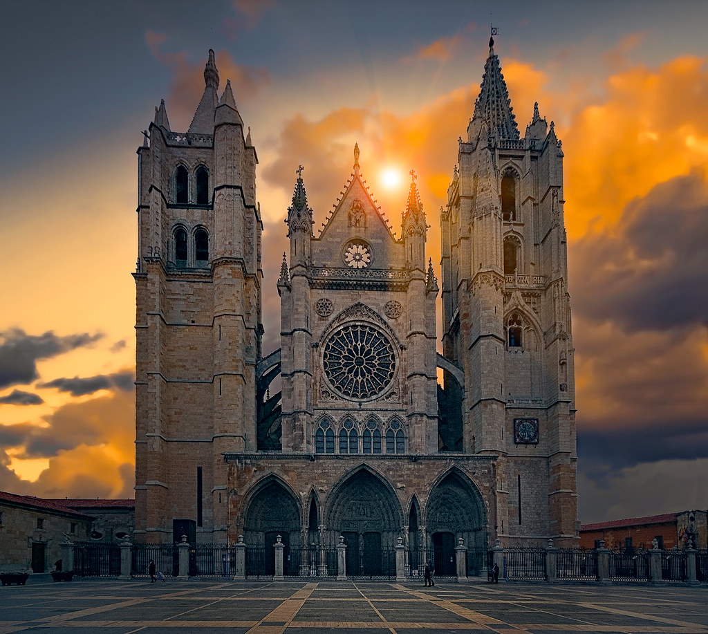
Una de las catedrales góticas más impresionantes de España, famosa por sus vidrieras.
| Información | Detalle | |
|---|---|---|
| Horarios | Los horarios cambian por temporada. Consulta la web oficial para el horario actualizado. | Consultar |
| Entradas | Los precios varían por tipo de entrada (general/reducida). Consulta la web oficial para tarifas actualizadas. | Consultar |
| Mapa | 📍 Ver en Google Maps | Consultar |
| Web oficial | Ir a catedraldeleon.org | Consultar |
Consejo: compra online si vas en festivos.
El conjunto románico más emblemático de León. El Panteón Real es conocido como la “Capilla Sixtina del románico”.
| Información | Detalle | |
|---|---|---|
| Horarios | Varían por temporada. Recomendación: confirmar antes de ir. | Consultar |
| Entradas | Tarifas según visita y descuentos. Confirmar en su web oficial. | Consultar |
| Mapa | 📍 Ver en Google Maps | Consultar |
Si te interesa el románico, reserva con margen: se disfruta mucho con visita guiada.
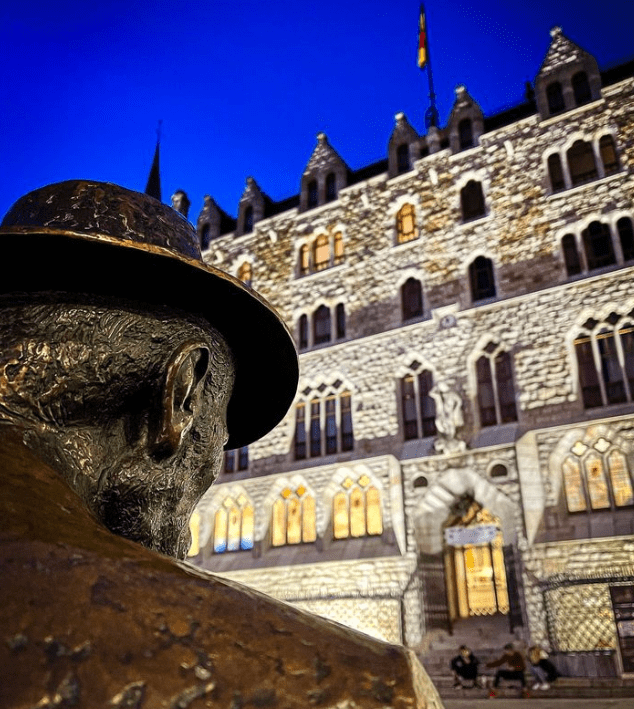
Edificio modernista único. Dentro: museo, exposiciones y tienda.
| Información | Detalle | |
|---|---|---|
| Horario | Miércoles a lunes (martes cerrado). Consulta temporada y pases en la web oficial. | Consultar |
| Tarifas orientativas | Entrada general y reducida. Ver tarifas y actividades en la web oficial. | Consultar |
| Mapa | 📍 Google Maps | Consultar |
| Web oficial | Ir a casabotines.es | Consultar |
Una de las fachadas más reconocibles de León. Paseo perfecto por la zona del río.
Si solo quieres ver exterior, es gratis. Para servicios del Parador, consulta disponibilidad.
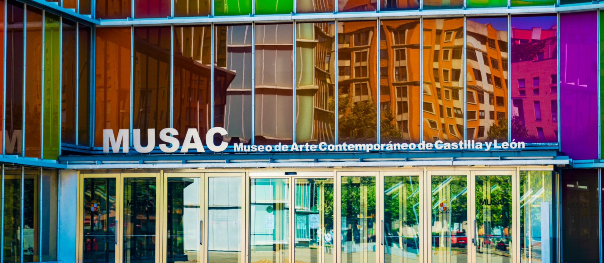
Ideal para un plan diferente. Exposiciones temporales + colección.
| Información | Detalle | |
|---|---|---|
| Horarios | Varían por temporada. Consulta antes de ir. | Consultar |
| Entrada | General 3€ / Reducida 2€ (según información pública; puede cambiar). | Consultar |
| Mapa | 📍 Google Maps | Consultar |
| Web | Ir a musac.es | Consultar |
Suele haber franjas gratuitas algunos días/horas según programación.
Última revisión: 26 febrero 2026. Esta página se centra en el uso real de la web. Si añadimos analítica o publicidad en el futuro, actualizaremos esta política.
Son imprescindibles para el funcionamiento básico de la web y no requieren consentimiento previo. Por ejemplo, recordar tu elección de cookies.
Solo se activarían si las aceptas. Actualmente no cargamos cookies de analítica de terceros por defecto.
Puedes cambiar tu preferencia desde aquí:
También puedes borrar los datos del navegador (almacenamiento local) para que el aviso vuelva a aparecer.
Si tienes dudas sobre cookies o privacidad: contacto.comeenleon@gmail.com
León cuenta con restaurantes reconocidos por la Guía Michelin (Estrella y Bib Gourmand). Reserva con antelación en temporada alta.
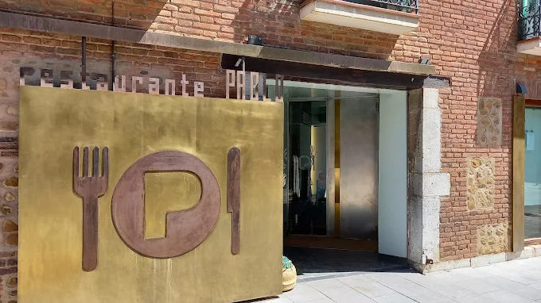
Chef Juanjo Losada. Cocina leonesa contemporánea con producto local. Muy cerca de la Catedral. Consulta disponibilidad en su web oficial.
Reservar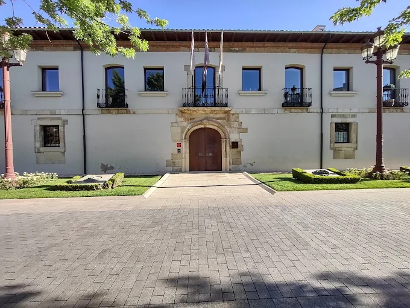
Yolanda León y Juanjo Pérez. Menú degustación de temporada basado en producto leonés. Situado junto a San Marcos.
Reservar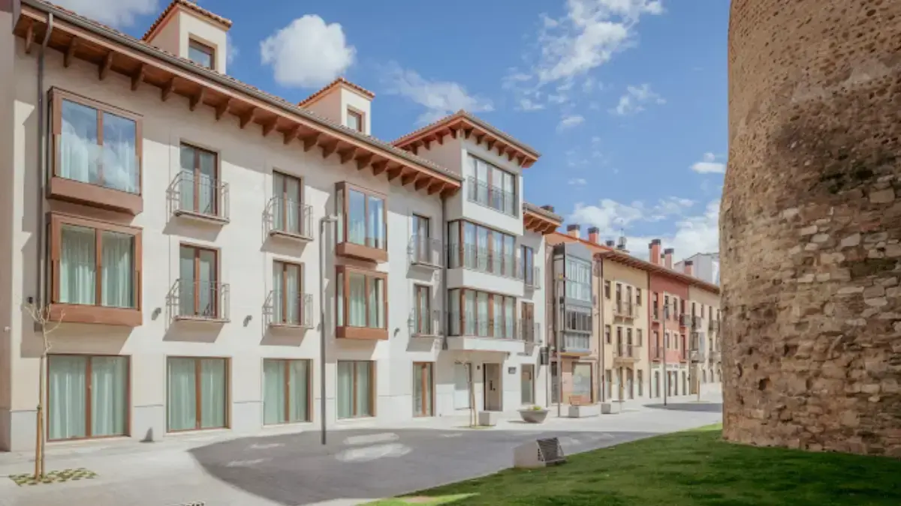
Reconocido con Bib Gourmand por su buena relación calidad‑precio. Cocina de mercado accesible.
Mapa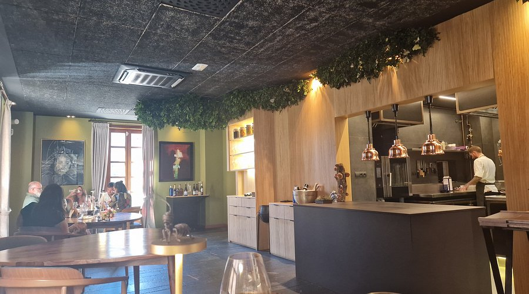
Restaurante con estrella en la provincia de León (Bierzo). Ideal si visitas el Castillo de los Templarios.
Mapa{kind=link}